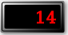

MBLogic
for an open world in automation
MBLogic
for an open world in automation
Help - HMI Numeric and Text Display
Overview:
Numeric and text displays are used to display numeric and text values. The text displayed may be text data from the server data table, or it may be text representations of numeric indexes.


Display of Numbers and Text
Numbers and text are displayed using the SVG "text" element. For example:
<text x="100" y="50" font-size="20">some text</text>
This example displays the text message "some text" at the X and Y coordinates of 100 and 50 respectively, and in a font size of 20.
The following example adds a few more parameters.
<text id="MsgIDText" x="30" y="8" stroke="red" fill="red" font-size="20" text-anchor="end">msgid:</text>
The "id" allows it to be addressed by a Javascript function to allow the actual text to be changed dynamically. The "stroke" and "fill" specify the colour. The "text-anchor" controls the justification (this example is right justified). The most usefull text attributes are:
- x - This controls the "x" coordinate of the screen location.
- y - This controls the "y" coordinate of the screen location.
- id - This provides a means for Javascript to control the value or text displayed. This is not needed for static text such as labels, only for text which needs to be updated by the program.
- font-size - This controls the size of the font. Larger numbers will produce larger characters.
- stroke - This controls the colour of the outline of each character.
- fill - This controls the colour of the interior of each character. For smaller character sizes, the "stroke" will be large enough that the "fill" may not be visible.
- text-anchor - This controls text justification. The possible values are "start", "middle", and "end". The default is "start", which results in left justification (which is used for normal text). "Middle" will centre justify, which may be useful for positioning lables. "End" will right justify the text, which is useful for displaying numbers.
Other text attributes are available and are explained in the official SVG specification documents.
Backgrounds and Bezels:
Numbers and text strings are displayed using the basic SVG "text" element. However decorative graphics can be used backgrounds which the text element writes on top of. These background graphics can be as elaborate or as simple as desired. SVG transforms can be used to scale the graphics to change the size and proportions as required for the application.
Basic Outline Box
A basic outline box can be created with a simple rectangle. For example:
<rect x="100" y="50" width="100" height="35" fill="white" stroke="blue" stroke-width="5" rx="10" ry="10" opacity="1.0" />
This creates a blue rectangle with a white background. The corners are rounded by using the "rx" and "ry" attributes. The "opacity" attribute is used to control whether the background is allowed to show through (1.0 is completely opaque).
Decorative Graphical Bezels
A decorative "bezel" is provided for the display of numbers and text. This is provided in three sizes. The standard size is "MB_DigitBezel" and is suitable for typical 5 digit displays. "MB_DigitBezel2" is twice the width of "MB_DigitBezel". "MB_DigitBezel0_5" is half the width of "MB_DigitBezel". Additional sizes may be obtained by scaling.
The colour of the outer part of the standard bezels is fixed as being a black gradient shading to white. The background of the area where the numbers or text would be displayed though can be set to any colour by using the "fill" attribute. In addition, the overall size and proportions may be adjusted by scaling. For example:
<!-- This displays the server ID. --> <g transform="translate(250,145)"> <g transform="scale(2,1)" fill="indigo"> <use xlink:href="#MB_DigitBezel2"/> </g> <text id="ServerIDText" x="-120" y="8" stroke="orange" fill="orange" font-size="20">serverid:</text> </g>
Decorative Bezel Definitions
The following shows the provided decorative bezel definitions.
<defs> <!-- This is a decorative gradient for the display. --> <linearGradient id="MB_DigitBezelGradient" x1="1" y1="1" x2="0" y2="0"> <stop offset="0%" stop-color="black" /> <stop offset="100%" stop-color="whitesmoke" /> </linearGradient> <!-- This is a decorative box for display numbers and text. This is sized appropriately to hold 4 numeric digits of 24 point font. --> <g id="MB_DigitBezel"> <!-- This provides the drop shadow. --> <rect x="-38" y="-18" width="80" height="40" rx="2" fill="grey" filter="url(#MB_DropShadowFilter)" stroke="none"/> <!-- This provides the outer ring. --> <rect x="-40" y="-20" width="80" height="40" rx="2" fill="url(#MB_DigitBezelGradient)" stroke="none"/> <!-- This provides the middle ring. --> <rect x="-38" y="-18" width="76" height="36" rx="2" fill="url(#MB_DigitBezelGradient)" stroke="black"/> <!-- This provides the inner background. --> <rect x="-35" y="-15" width="70" height="30" rx="2" /> </g> <!-- This is a decorative box for display numbers and text. This is twice the width of MB_DigitBezel. --> <g id="MB_DigitBezel2"> <!-- This provides the drop shadow. --> <rect x="-73" y="-18" width="150" height="40" rx="2" fill="grey" filter="url(#MB_DropShadowFilter)" stroke="none"/> <!-- This provides the outer ring. --> <rect x="-75" y="-20" width="150" height="40" rx="2" fill="url(#MB_DigitBezelGradient)" stroke="none"/> <!-- This provides the middle ring. --> <rect x="-73" y="-18" width="146" height="36" rx="2" fill="url(#MB_DigitBezelGradient)" stroke="black"/> <!-- This provides the inner background. --> <rect x="-70" y="-15" width="140" height="30" rx="2" /> </g> <!-- This is a decorative box for display numbers and text. This is half the width of MB_DigitBezel.--> <g id="MB_DigitBezel0_5"> <!-- This provides the drop shadow. --> <rect x="-21" y="-18" width="46" height="40" rx="2" fill="grey" filter="url(#MB_DropShadowFilter)" stroke="none"/> <!-- This provides the outer ring. --> <rect x="-23" y="-20" width="46" height="40" rx="2" fill="url(#MB_DigitBezelGradient)" stroke="none"/> <!-- This provides the middle ring. --> <rect x="-21" y="-18" width="42" height="36" rx="2" fill="url(#MB_DigitBezelGradient)" stroke="black"/> <!-- This provides the inner background. --> <rect x="-18" y="-15" width="36" height="30" rx="2" /> </g> <!-- This is a decorative box for the increment/decrement display. --> <g id="MB_IncDecBezel"> <!-- This provides the drop shadow. --> <rect x="-38" y="-25" width="80" height="54" rx="2" fill="grey" filter="url(#MB_DropShadowFilter)" stroke="none"/> <!-- This provides the outer ring. --> <rect x="-40" y="-27" width="80" height="54" rx="2" fill="url(#MB_DigitBezelGradient)" stroke="none"/> <!-- This provides the middle ring. --> <rect x="-38" y="-25" width="76" height="50" rx="2" fill="url(#MB_DigitBezelGradient)" stroke="black"/> <!-- This provides the inner background. --> <rect x="-35" y="-15" width="70" height="30" rx="2" /> </g> <!-- This is a decorative box for the increment/decrement display. This is half the width of MB_IncDecBezel --> <g id="MB_IncDecBezel0_5"> <!-- This provides the drop shadow. --> <rect x="-21" y="-25" width="46" height="54" rx="2" fill="grey" filter="url(#MB_DropShadowFilter)" stroke="none"/> <!-- This provides the outer ring. --> <rect x="-23" y="-27" width="46" height="54" rx="2" fill="url(#MB_DigitBezelGradient)" stroke="none"/> <!-- This provides the middle ring. --> <rect x="-21" y="-25" width="42" height="50" rx="2" fill="url(#MB_DigitBezelGradient)" stroke="black"/> <!-- This provides the inner background. --> <rect x="-18" y="-15" width="36" height="30" rx="2" /> </g> </defs>
Integer Display:
An integer display is used to display the value from an integer protocol tag.
SVG
<!-- This displays the server message ID. --> <g transform="translate(550, 100)"> <g fill="black"> <use xlink:href="#MB_DigitBezel"/> </g> <text id="MsgIDText" x="30" y="8" stroke="red" fill="red" font-size="20" text-anchor="end">msgid:</text> </g>
Javascript
// This is for the message ID display. var MessageID = new MB_NumericDisplay(document, "MsgIDText"); MBHMIProtocol.AddToDisplayList(MessageID, "msgid", "msgid");
Javascript Library Functions:
The following Javascript library functions are useful for this feature:
- MB_NumericDisplay
How it works:
An SVG text element is used to display integers by setting its data property to the value read from a tag. The value may be enclosed by a rectangle or other shape for emphasis, but this is not necessary for the actual display of data.
MB_NumericDisplay requires the "id" of an SVG text element. The data is then derived from the display list. Any type of data can be displayed, but if floating point data is used there is no control over the number of decimal places.
Float Display:
This is identical to the integer display, except it allows the number of decimal places to be specified.
SVG
<!-- This displays the tank 1 level. --> <g transform="translate(185,25)"> <rect x="0" y="10" width="100" height="35" fill="white" stroke="blue" stroke-width="5" rx="10" ry="10" opacity="1.0" /> <text x="5" y="35" font-size="24" id="Tank1Text">Tank1</text> </g>
Javascript
// Tank 1 fill level numeric display. var Tank1Number = new MB_NumericFloatDisplay(document, "Tank1Text", 2); MBHMIProtocol.AddToDisplayList(Tank1Number, "Tank1Number", "read");
Javascript Library Functions:
The following Javascript library functions are useful for this feature:
- MB_NumericFloatDisplay
How it works:
MB_NumericFloatDisplay accepts an additional parameter specifying the number of decimal places to be displayed.
String Display:
This is identical to the integer display, except it is intended for string data.
SVG
<!-- This displays the server ID. --> <g transform="translate(500, 30)"> <rect x="150" y="-25" width="300" height="35" fill="none" stroke="blue" stroke-width="5" rx="10" ry="10" opacity="0.5" /> <text x="0" y="0" font-size="24">Server ID:</text> <text x="155" y="0" font-size="24" id="ServerIDText">serverid:</text> </g>
Javascript
// This is for the server ID display (name of the server). var ServerID = new MB_StringDisplay(document, "ServerIDText"); MBHMIProtocol.AddToDisplayList(ServerID, "serverid", "serverid");
Javascript Library Functions:
The following Javascript library functions are useful for this feature:
- MB_StringDisplay
How it works:
This is similar to the integer display.
Text Index Display:
This uses a numeric index as an index to an array of text strings, and displays the resulting text string.
SVG
<!-- Display a text message indexed by a tag value. --> <g transform="translate(250,265)"> <rect x="0" y="0" width="100" height="35" fill="none" stroke="blue" stroke-width="5" rx="10" ry="10" opacity="0.5" /> <text x="10" y="25" font-size="24" id="PL4-Colour">PL4 Colour</text> </g>
Javascript
// This is for text indicators. This can be stored in an external file. Msg_HMIDemoColours = ["red", "orange", "yellow", "green", "blue", "indigo", "violet"]; // This is for the text display of pilot light colours. // The list of colours comes from an external file. var PLColourText = new MB_TextDisplay(document, "PL4-Colour", Msg_HMIDemoColours); MBHMIProtocol.AddToDisplayList(PLColourText, "PL4", "read");
Javascript Library Functions:
The following Javascript library functions are useful for this feature:
- MB_TextDisplay
How it works:
MB_TextDisplay uses an integer value as an index to an array of strings. The resulting string is then displayed in the associated SVG text element. This is similar to how the multi-colour pilot light works, except MB_TextDisplay displays the actual text values. This example used the names of colours as data, but any array of strings may be used.
7 Segment LED Style Digits

7 segment LED style digits can be used as decorative numeric displays. Unlike normal numeric or text displays however, these digits are not actual fonts. Rather, they are just a series of graphics which are displayed one at a time.
The following shows the definitions for the individual digits. There are a total of 10, for the digits 0 to 9.
<!-- This defines the digits for a 7 segment display. --> <defs> <!-- Digit for 0 --> <g id="MB_LED7SEG0"> <!-- Top segment. --> <polygon points="1,1 2,0 10,0 11,1 10,2 2,2 1,1"/> <!-- Upper right. --> <polygon points="11,1 12,2 12,10 11,11 10,10 10,2 11,1"/> <!-- Lower right. --> <polygon points="11,11 12,12 12,20 11,21 10,20 10,12 11,11"/> <!-- Bottom segment. --> <polygon points="1,21 2,20 10,20 11,21 10,22 2,22 1,21"/> <!-- Lower left. --> <polygon points="1,11 2,12 2,20 1,21 0,20 0,12 1,11"/> <!-- Upper left. --> <polygon points="1,1 2,2 2,10 1,11 0,10 0,2 1,1"/> </g> <!-- Digit for 1 --> <g id="MB_LED7SEG1"> <!-- Upper right. --> <polygon points="11,1 12,2 12,10 11,11 10,10 10,2 11,1"/> <!-- Lower right. --> <polygon points="11,11 12,12 12,20 11,21 10,20 10,12 11,11"/> </g> <!-- Digit for 2 --> <g id="MB_LED7SEG2"> <!-- Top segment. --> <polygon points="1,1 2,0 10,0 11,1 10,2 2,2 1,1"/> <!-- Upper right. --> <polygon points="11,1 12,2 12,10 11,11 10,10 10,2 11,1"/> <!-- Bottom segment. --> <polygon points="1,21 2,20 10,20 11,21 10,22 2,22 1,21"/> <!-- Lower left. --> <polygon points="1,11 2,12 2,20 1,21 0,20 0,12 1,11"/> <!-- Middle segment. --> <polygon points="1,11 2,10 10,10 11,11 10,12 2,12 1,11"/> </g> <!-- Digit for 3 --> <g id="MB_LED7SEG3"> <!-- Top segment. --> <polygon points="1,1 2,0 10,0 11,1 10,2 2,2 1,1"/> <!-- Upper right. --> <polygon points="11,1 12,2 12,10 11,11 10,10 10,2 11,1"/> <!-- Lower right. --> <polygon points="11,11 12,12 12,20 11,21 10,20 10,12 11,11"/> <!-- Bottom segment. --> <polygon points="1,21 2,20 10,20 11,21 10,22 2,22 1,21"/> <!-- Middle segment. --> <polygon points="1,11 2,10 10,10 11,11 10,12 2,12 1,11"/> </g> <!-- Digit for 4 --> <g id="MB_LED7SEG4"> <!-- Upper right. --> <polygon points="11,1 12,2 12,10 11,11 10,10 10,2 11,1"/> <!-- Lower right. --> <polygon points="11,11 12,12 12,20 11,21 10,20 10,12 11,11"/> <!-- Upper left. --> <polygon points="1,1 2,2 2,10 1,11 0,10 0,2 1,1"/> <!-- Middle segment. --> <polygon points="1,11 2,10 10,10 11,11 10,12 2,12 1,11"/> </g> <!-- Digit for 5 --> <g id="MB_LED7SEG5"> <!-- Top segment. --> <polygon points="1,1 2,0 10,0 11,1 10,2 2,2 1,1"/> <!-- Lower right. --> <polygon points="11,11 12,12 12,20 11,21 10,20 10,12 11,11"/> <!-- Bottom segment. --> <polygon points="1,21 2,20 10,20 11,21 10,22 2,22 1,21"/> <!-- Upper left. --> <polygon points="1,1 2,2 2,10 1,11 0,10 0,2 1,1"/> <!-- Middle segment. --> <polygon points="1,11 2,10 10,10 11,11 10,12 2,12 1,11"/> </g> <!-- Digit for 6 --> <g id="MB_LED7SEG6"> <!-- Top segment. --> <polygon points="1,1 2,0 10,0 11,1 10,2 2,2 1,1"/> <!-- Lower right. --> <polygon points="11,11 12,12 12,20 11,21 10,20 10,12 11,11"/> <!-- Bottom segment. --> <polygon points="1,21 2,20 10,20 11,21 10,22 2,22 1,21"/> <!-- Lower left. --> <polygon points="1,11 2,12 2,20 1,21 0,20 0,12 1,11"/> <!-- Upper left. --> <polygon points="1,1 2,2 2,10 1,11 0,10 0,2 1,1"/> <!-- Middle segment. --> <polygon points="1,11 2,10 10,10 11,11 10,12 2,12 1,11"/> </g> <!-- Digit for 7 --> <g id="MB_LED7SEG7"> <!-- Top segment. --> <polygon points="1,1 2,0 10,0 11,1 10,2 2,2 1,1"/> <!-- Upper right. --> <polygon points="11,1 12,2 12,10 11,11 10,10 10,2 11,1"/> <!-- Lower right. --> <polygon points="11,11 12,12 12,20 11,21 10,20 10,12 11,11"/> </g> <!-- Digit for 8 --> <g id="MB_LED7SEG8"> <!-- Top segment. --> <polygon points="1,1 2,0 10,0 11,1 10,2 2,2 1,1"/> <!-- Upper right. --> <polygon points="11,1 12,2 12,10 11,11 10,10 10,2 11,1"/> <!-- Lower right. --> <polygon points="11,11 12,12 12,20 11,21 10,20 10,12 11,11"/> <!-- Bottom segment. --> <polygon points="1,21 2,20 10,20 11,21 10,22 2,22 1,21"/> <!-- Lower left. --> <polygon points="1,11 2,12 2,20 1,21 0,20 0,12 1,11"/> <!-- Upper left. --> <polygon points="1,1 2,2 2,10 1,11 0,10 0,2 1,1"/> <!-- Middle segment. --> <polygon points="1,11 2,10 10,10 11,11 10,12 2,12 1,11"/> </g> <!-- Digit for 9 --> <g id="MB_LED7SEG9"> <!-- Top segment. --> <polygon points="1,1 2,0 10,0 11,1 10,2 2,2 1,1"/> <!-- Upper right. --> <polygon points="11,1 12,2 12,10 11,11 10,10 10,2 11,1"/> <!-- Lower right. --> <polygon points="11,11 12,12 12,20 11,21 10,20 10,12 11,11"/> <!-- Upper left. --> <polygon points="1,1 2,2 2,10 1,11 0,10 0,2 1,1"/> <!-- Middle segment. --> <polygon points="1,11 2,10 10,10 11,11 10,12 2,12 1,11"/> </g> </defs>
The following shows how to display the 7 segment LED digits. This creates a 4 digit display. Fixed position decimal places are created by using simple circles (3 of the 4 decimal point circles are commented out in this example). Note that SVG "id" labels must be used for each digit. This means that a total of 40 ids are required for a 4 digit display (4 digits times 10 graphics).
The the digits may be any colour.
<!-- This is an LED display. --> <g transform="translate(200, 150)"> <!-- This is used to scale the size of the entire LED display. --> <g transform="scale(4)"> <!-- This is a decorative box for the display. --> <g transform="translate(0, 0)" fill="black"> <use xlink:href="#MB_DigitBezel"/> </g> <!-- Set the appearance of the numbers. --> <g transform="translate(-28, -12)" fill="red" stroke="black" stroke-width="0.25px"> <!-- Digit 4 - Left most. --> <g transform="translate(0, 0)"> <use id="LEDA40" xlink:href="#MB_LED7SEG0"/> <use id="LEDA41" xlink:href="#MB_LED7SEG1"/> <use id="LEDA42" xlink:href="#MB_LED7SEG2"/> <use id="LEDA43" xlink:href="#MB_LED7SEG3"/> <use id="LEDA44" xlink:href="#MB_LED7SEG4"/> <use id="LEDA45" xlink:href="#MB_LED7SEG5"/> <use id="LEDA46" xlink:href="#MB_LED7SEG6"/> <use id="LEDA47" xlink:href="#MB_LED7SEG7"/> <use id="LEDA48" xlink:href="#MB_LED7SEG8"/> <use id="LEDA49" xlink:href="#MB_LED7SEG9"/> <!-- Decimal point. --> <!-- <circle cx="13px" cy="21px" r="1px" fill="red" /> --> </g> <!-- Digit 3. --> <g transform="translate(15, 0)"> <use id="LEDA30" xlink:href="#MB_LED7SEG0"/> <use id="LEDA31" xlink:href="#MB_LED7SEG1"/> <use id="LEDA32" xlink:href="#MB_LED7SEG2"/> <use id="LEDA33" xlink:href="#MB_LED7SEG3"/> <use id="LEDA34" xlink:href="#MB_LED7SEG4"/> <use id="LEDA35" xlink:href="#MB_LED7SEG5"/> <use id="LEDA36" xlink:href="#MB_LED7SEG6"/> <use id="LEDA37" xlink:href="#MB_LED7SEG7"/> <use id="LEDA38" xlink:href="#MB_LED7SEG8"/> <use id="LEDA39" xlink:href="#MB_LED7SEG9"/> <!-- Decimal point. --> <!-- <circle cx="13px" cy="21px" r="1px" fill="red" /> --> </g> <!-- Digit 2. --> <g transform="translate(30, 0)"> <use id="LEDA20" xlink:href="#MB_LED7SEG0"/> <use id="LEDA21" xlink:href="#MB_LED7SEG1"/> <use id="LEDA22" xlink:href="#MB_LED7SEG2"/> <use id="LEDA23" xlink:href="#MB_LED7SEG3"/> <use id="LEDA24" xlink:href="#MB_LED7SEG4"/> <use id="LEDA25" xlink:href="#MB_LED7SEG5"/> <use id="LEDA26" xlink:href="#MB_LED7SEG6"/> <use id="LEDA27" xlink:href="#MB_LED7SEG7"/> <use id="LEDA28" xlink:href="#MB_LED7SEG8"/> <use id="LEDA29" xlink:href="#MB_LED7SEG9"/> <!-- Decimal point. --> <circle cx="13px" cy="21px" r="1px" fill="red" /> </g> <!-- Digit 1 - right most. --> <g transform="translate(45, 0)"> <use id="LEDA10" xlink:href="#MB_LED7SEG0"/> <use id="LEDA11" xlink:href="#MB_LED7SEG1"/> <use id="LEDA12" xlink:href="#MB_LED7SEG2"/> <use id="LEDA13" xlink:href="#MB_LED7SEG3"/> <use id="LEDA14" xlink:href="#MB_LED7SEG4"/> <use id="LEDA15" xlink:href="#MB_LED7SEG5"/> <use id="LEDA16" xlink:href="#MB_LED7SEG6"/> <use id="LEDA17" xlink:href="#MB_LED7SEG7"/> <use id="LEDA18" xlink:href="#MB_LED7SEG8"/> <use id="LEDA19" xlink:href="#MB_LED7SEG9"/> <!-- Decimal point. --> <!-- <circle cx="13px" cy="21px" r="1px" fill="red" /> --> </g> </g> </g> <!-- Scale. --> </g>
Javascript
// Seven segment display demo. var SevenSegA1 = new MB_LEDDigit(document, ["LEDA10", "LEDA11", "LEDA12", "LEDA13", "LEDA14", "LEDA15", "LEDA16", "LEDA17", "LEDA18", "LEDA19"], 1); MBHMIProtocol.AddToDisplayList(SevenSegA1, "LED7Segment", "read"); var SevenSegA2 = new MB_LEDDigit(document, ["LEDA20", "LEDA21", "LEDA22", "LEDA23", "LEDA24", "LEDA25", "LEDA26", "LEDA27", "LEDA28", "LEDA29"], 2); MBHMIProtocol.AddToDisplayList(SevenSegA2, "LED7Segment", "read"); var SevenSegA3 = new MB_LEDDigit(document, ["LEDA30", "LEDA31", "LEDA32", "LEDA33", "LEDA34", "LEDA35", "LEDA36", "LEDA37", "LEDA38", "LEDA39"], 3); MBHMIProtocol.AddToDisplayList(SevenSegA3, "LED7Segment", "read"); var SevenSegA4 = new MB_LEDDigit(document, ["LEDA40", "LEDA41", "LEDA42", "LEDA43", "LEDA44", "LEDA45", "LEDA46", "LEDA47", "LEDA48", "LEDA49"], 4); MBHMIProtocol.AddToDisplayList(SevenSegA4, "LED7Segment", "read");
Javascript Library Functions:
The following Javascript library functions are useful for this feature:
- MB_LEDDigit
How it works:
The 7 segment LED display shows a sequence of graphics which are shaped like the numeric digits in 7 segment LED displays. However, these are not actual fonts. They are simply graphic images created using SVG. Each digit position uses a Javascript function to independently select one of 10 graphics which form the digits. The Javascript functions simply show one graphic at a time while hiding the others for each position (using the same method as is used for hiding and display screens). This means that a 4 digit display requires creating 4 Javacript objects (one for each digit).
The Javascript function for each digit must be given an ordered list of the 10 "id" labels for the SVG for the digit, and a digit position. The digit position is used by the function to determine which decimal digit from the integer is to be displayed (e.g. '1' for the ones digit, '2' for the tens digit, '3' for the hundreds digit, etc.).
Updating 7 segment LED digits is quite graphically intensive, and excessive use of them can cause a significant load on the computer used to display them. It is not recommended to use a large number of them on rapidly changing data.